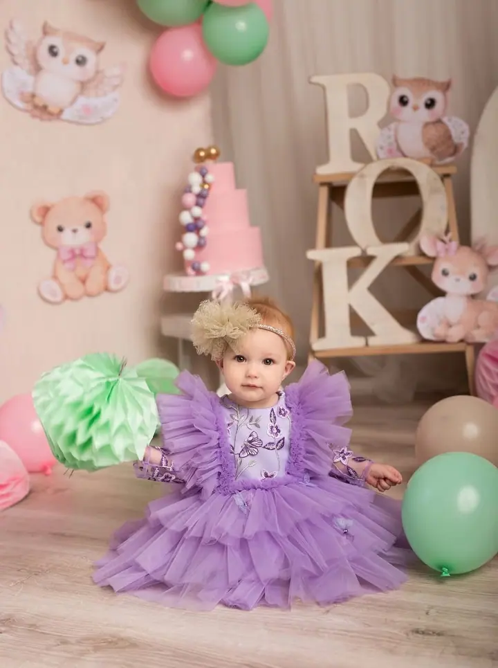
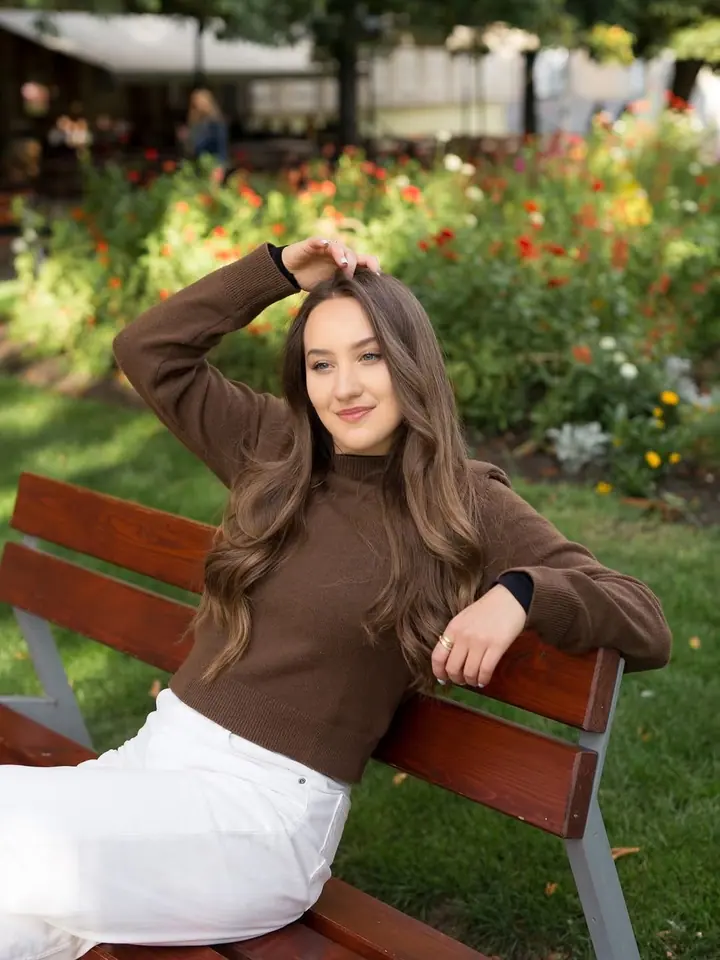
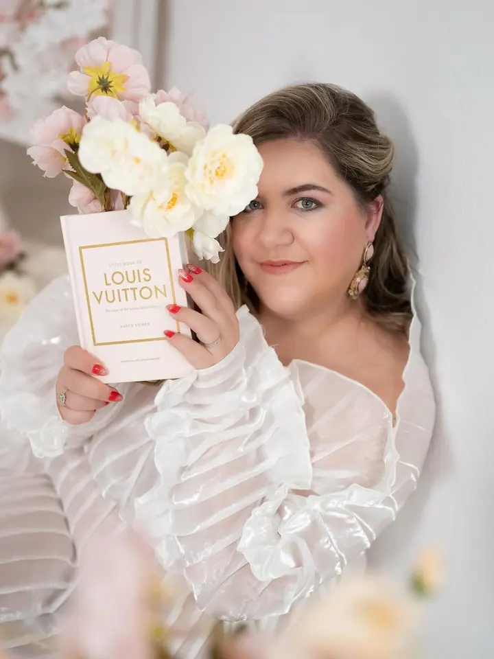
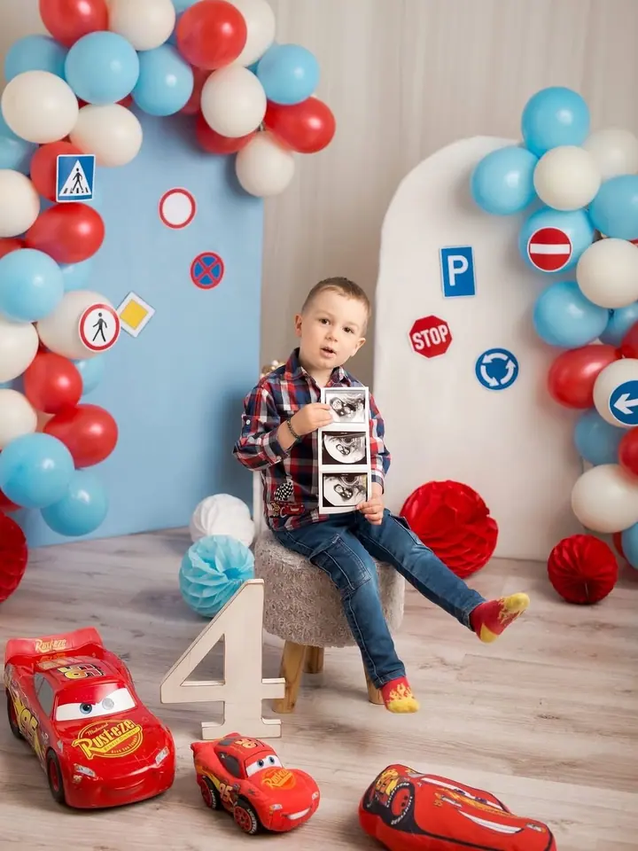
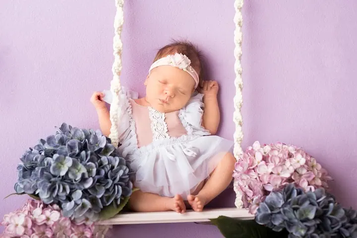
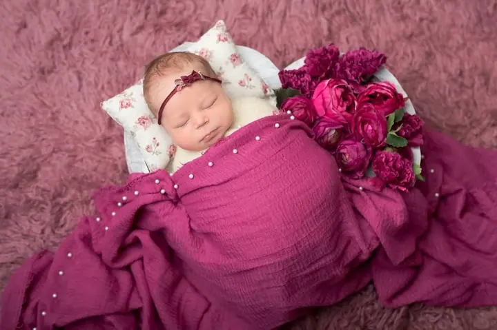

Newborn focení
Novorozence fotím v ateliéru v klidu a v teple. Miminko spí, stačí pár podložek, čelenka a kvítek, a vzniknou fotky, ke kterým se budete vracet.





Jmenuji se Veronika Šindelářová a v Plzni fotím novorozence, maminky v očekávání i děti a celé rodiny. Fotíme v mém ateliéru, kde je vše připravené, nebo venku v přírodě.
Více o mně
„Tyhle první dny už se nevrátí“
— Veronika Šindelářová
Novorozence fotím v ateliéru v klidu a v teple. Miminko spí, stačí pár podložek, čelenka a kvítek, a vzniknou fotky, ke kterým se budete vracet.
Fotím rodiny, děti i oslavy narozenin, v ateliéru s dekorací nebo venku v přírodě. Pro holčičky mám připravené šaty v několika velikostech.
Každý rok připravuji v ateliéru vánoční scénu se stromečkem a světýlky. Rezervace na Vánoce 2026 jsou otevřené.
Fotky z doby, kdy čekáte miminko. Fotíme v ateliéru, v jemných barvách a s květinami.
Jsem fotografka z Plzně a nejvíc času trávím s miminky, těhotnými maminkami a rodinami. V ateliéru mám připravené podložky, zavinovačky, čelenky i květiny, takže vy se nemusíte o nic starat a můžete si focení užít.
Ráda připravuji scény podle příležitosti: balonky a dort k narozeninám, slunečnice nebo podzimní piknik venku, na jaře Velikonoce a v zimě vánoční ateliér se stromečkem. Pro holčičky mám šaty ve velikostech 92 až 128, stačí si vybrat.
Termín si zarezervujete online přes můj rezervační systém. Když si nebudete jistí, co zvolit, napište mi a domluvíme se.
Vyberte si typ focení a termín si zarezervujte online v rezervačním systému. S čímkoli vám ráda poradím.
Domluvíme se na barvách, oblečení a scéně. Pro holčičky můžete vybírat z mých šatů, ateliér připravím předem.
Fotíme v klidu a bez spěchu, u miminek se přizpůsobíme jejich rytmu krmení a spánku.
Z focení vyberu nejlepší snímky a pečlivě je upravím. Termín předání vám řeknu při rezervaci.
Ideální jsou první dny po narození, kdy miminko hodně spí. Termín je dobré zarezervovat ještě před porodem a upřesnit ho, až se miminko narodí.
Většinou v mém ateliéru v Plzni. Rodinné a dětské focení může být i venku, třeba mezi slunečnicemi nebo v podzimním sadu.
Pro miminka mám v ateliéru zavinovačky, čelenky i dekorace a pro holčičky šaty ve velikostech 92 až 128. Vlastní oblečení si ale samozřejmě vzít můžete.
Rezervace na Vánoce 2026 jsou otevřené přes online rezervační systém. Volné termíny se před Vánoci rychle plní, proto doporučuji nečekat.